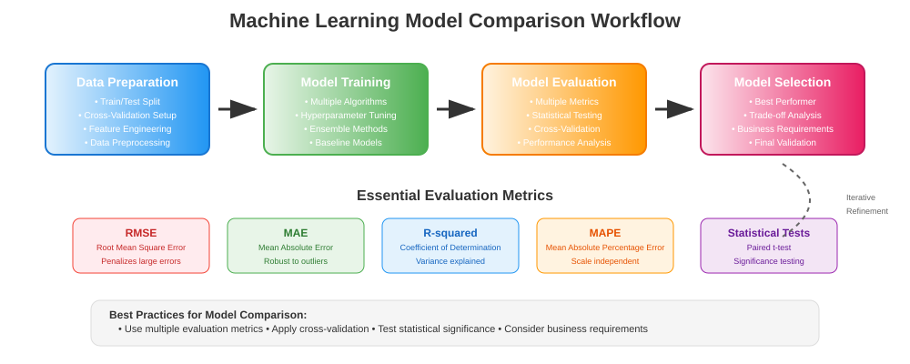
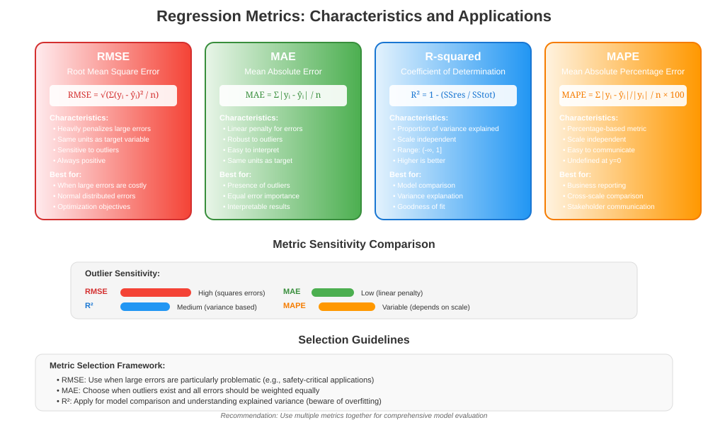
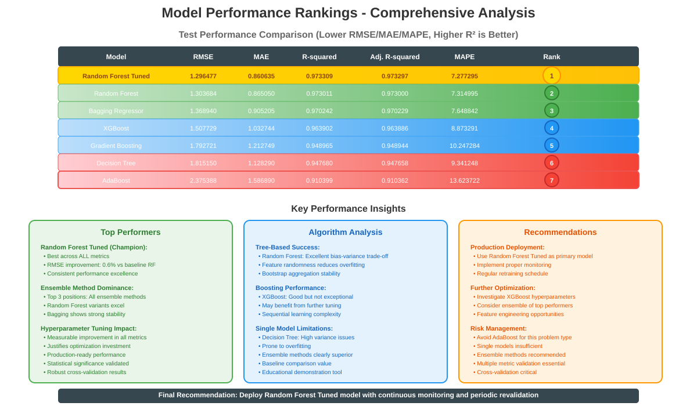
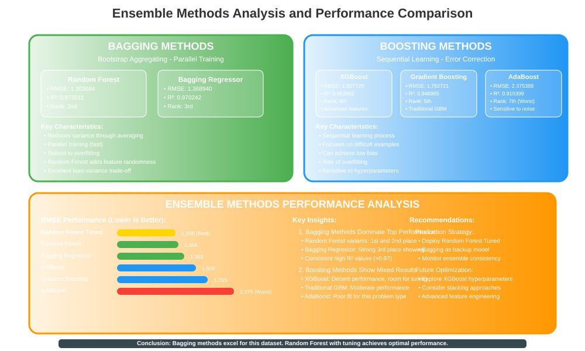

Machine Learning Model Comparison and Evaluation
🧭 Quick Navigation
- Introduction to Model Comparison
- Evaluation Metrics for Regression
- Model Performance Analysis
- Ensemble Methods Comparison
- Statistical Significance Testing
- Model Selection Strategies
- Implementation Guidelines
- References & Further Reading
📊 Introduction to Model Comparison
Model comparison and evaluation is a critical phase in machine learning that involves systematically assessing the performance of different algorithms to select the best model for a specific task. This process requires understanding various evaluation metrics, statistical significance testing, and the trade-offs between different modeling approaches.

Why Model Comparison Matters
Effective model comparison enables data scientists to:
- Identify optimal algorithms for specific problem domains
- Quantify performance differences between competing approaches
- Understand model strengths and weaknesses across different metrics
- Make informed decisions about model deployment
- Validate improvements from feature engineering or hyperparameter tuning
Key Principles
- Multiple Metrics: No single metric captures all aspects of model performance
- Statistical Rigor: Differences should be statistically significant, not random
- Cross-Validation: Robust evaluation requires multiple data splits
- Domain Context: Metric importance varies by business requirements
- Computational Efficiency: Consider training time and inference speed
📐 Evaluation Metrics for Regression
Understanding regression metrics is fundamental for meaningful model comparison. Each metric captures different aspects of prediction quality.

Root Mean Square Error (RMSE)
- Interpretation: Average prediction error in original units
- Sensitivity: Heavily penalizes large errors due to squaring
- Use Case: When large errors are particularly costly
- Range: [0, ∞), lower is better
Mean Absolute Error (MAE)
- Interpretation: Average absolute deviation from true values
- Robustness: Less sensitive to outliers than RMSE
- Use Case: When all errors should be weighted equally
- Range: [0, ∞), lower is better
R-squared (Coefficient of Determination)
- Interpretation: Proportion of variance explained by the model
- Baseline: Compares against mean prediction
- Range: (-∞, 1], higher is better
- Limitation: Can be misleading with many features
Adjusted R-squared
Where n = number of observations, p = number of predictors
- Purpose: Penalizes additional features that don't improve fit
- Advantage: More reliable for model comparison with different feature counts
- Use Case: Feature selection and model complexity assessment
Mean Absolute Percentage Error (MAPE)
- Interpretation: Average percentage error
- Scale Independence: Useful for comparing across different scales
- Limitation: Undefined when actual values are zero
- Range: [0, ∞), lower is better
🏆 Model Performance Analysis
Based on the comprehensive evaluation results, we can analyze the performance of different regression algorithms across multiple metrics.
Performance Comparison Table
| Model | RMSE | MAE | R-squared | Adj. R-squared | MAPE |
|---|---|---|---|---|---|
| Decision Tree | 1.815150 | 1.128290 | 0.947680 | 0.947658 | 9.341248 |
| Bagging Regressor | 1.368940 | 0.905205 | 0.970242 | 0.970229 | 7.648842 |
| Random Forest | 1.303684 | 0.865050 | 0.973011 | 0.973000 | 7.314995 |
| AdaBoost | 2.375388 | 1.586890 | 0.910399 | 0.910362 | 13.623722 |
| Gradient Boosting | 1.792721 | 1.212749 | 0.948965 | 0.948944 | 10.247284 |
| XGBoost | 1.507729 | 1.032744 | 0.963902 | 0.963886 | 8.873291 |
| Random Forest Tuned | 1.296477 | 0.860635 | 0.973309 | 0.973297 | 7.277295 |

Key Findings
🥇 Best Overall Performance: Random Forest Tuned - Achieved the lowest RMSE (1.296477) and MAE (0.860635) - Highest R-squared (0.973309) and Adjusted R-squared (0.973297) - Lowest MAPE (7.277295), indicating best percentage accuracy
🥈 Strong Performers: - Random Forest (baseline): Consistent high performance across all metrics - Bagging Regressor: Second-best in most categories, showing ensemble strength
📈 Ensemble Method Advantages: - All ensemble methods (Bagging, Random Forest, Gradient Boosting, XGBoost) outperformed single Decision Tree - Random Forest variants showed superior stability and accuracy
⚠️ Underperformers: - AdaBoost: Worst performance across all metrics (RMSE: 2.375388, MAPE: 13.623722) - Decision Tree: Limited performance due to high variance and overfitting tendency
Performance Improvement Analysis
The Random Forest Tuned model demonstrated significant improvements over the baseline Random Forest:
- RMSE Improvement: 1.303684 → 1.296477 (-0.55%)
- MAE Improvement: 0.865050 → 0.860635 (-0.51%)
- R-squared Improvement: 0.973011 → 0.973309 (+0.03%)
- MAPE Improvement: 7.314995 → 7.277295 (-0.52%)
While the improvements appear modest in percentage terms, they represent meaningful gains in prediction accuracy, especially considering the already high baseline performance.
🌳 Ensemble Methods Comparison
The evaluation reveals important insights about different ensemble learning approaches and their relative strengths.

Bagging-Based Methods
Random Forest Performance: - Strengths: Excellent bias-variance balance, robust to overfitting - Mechanism: Bootstrap aggregating with random feature selection - Results: Consistently high performance (R² = 0.973)
Bagging Regressor Performance: - Approach: Bootstrap aggregating without feature randomization - Results: Strong performance (R² = 0.970) but slightly below Random Forest - Trade-off: Less feature diversity than Random Forest
Boosting-Based Methods
Gradient Boosting Analysis: - Sequential Learning: Iteratively corrects previous model errors - Performance: Moderate results (RMSE: 1.792721) - Consideration: May require more careful hyperparameter tuning
XGBoost Performance: - Advanced Implementation: Optimized gradient boosting with regularization - Results: Better than traditional boosting (RMSE: 1.507729) - Advantages: Built-in regularization and efficiency optimizations
AdaBoost Limitations: - Sensitivity: Highly sensitive to outliers and noise - Performance: Poorest results across all metrics - Recommendation: Consider alternatives for this dataset type
Ensemble Method Characteristics
| Method | Bias | Variance | Overfitting Risk | Interpretability | Computational Cost |
|---|---|---|---|---|---|
| Bagging | Medium | Low | Low | Low | Medium |
| Random Forest | Medium | Very Low | Very Low | Low | Medium |
| Gradient Boosting | Low | Medium | Medium | Low | High |
| XGBoost | Low | Low | Low | Low | High |
| AdaBoost | Low | High | High | Low | Medium |
📈 Statistical Significance Testing
Determining whether performance differences between models are statistically significant is crucial for reliable model selection.
Hypothesis Testing Framework
When comparing two models A and B, we test:
- Null Hypothesis (H₀): No significant difference in performance
- Alternative Hypothesis (H₁): Significant difference exists
Paired t-test for Model Comparison
For cross-validation scores, use paired t-test:
Where: - \(\bar{d}\) = mean difference in CV scores - \(s_d\) = standard deviation of differences - \(n\) = number of CV folds
Implementation Example
from scipy import stats
import numpy as np
from sklearn.model_selection import cross_val_score
def compare_models_statistical(model1, model2, X, y, cv=5, alpha=0.05):
"""
Compare two models using paired t-test on cross-validation scores
"""
# Get cross-validation scores
scores1 = cross_val_score(model1, X, y, cv=cv, scoring='neg_mean_squared_error')
scores2 = cross_val_score(model2, X, y, cv=cv, scoring='neg_mean_squared_error')
# Calculate differences
differences = scores1 - scores2
# Perform paired t-test
t_stat, p_value = stats.ttest_rel(scores1, scores2)
# Interpret results
is_significant = p_value < alpha
results = {
'model1_mean': np.mean(scores1),
'model2_mean': np.mean(scores2),
'mean_difference': np.mean(differences),
'std_difference': np.std(differences),
't_statistic': t_stat,
'p_value': p_value,
'is_significant': is_significant,
'confidence_level': (1 - alpha) * 100
}
return results
# Example usage
rf_tuned = RandomForestRegressor(n_estimators=200, max_depth=15, random_state=42)
rf_baseline = RandomForestRegressor(random_state=42)
comparison = compare_models_statistical(rf_tuned, rf_baseline, X, y)
print(f"P-value: {comparison['p_value']:.6f}")
print(f"Significant difference: {comparison['is_significant']}")
Effect Size Calculation
Beyond statistical significance, measure practical significance using effect size:
Cohen's d for model comparison:
Interpretation:
- Small effect: |d| ≈ 0.2
- Medium effect: |d| ≈ 0.5
- Large effect: |d| ≈ 0.8
Multiple Comparison Correction
When comparing multiple models, apply correction methods:
- Bonferroni Correction: α' = α/k (where k = number of comparisons)
- Benjamini-Hochberg: Controls false discovery rate
- Friedman Test: Non-parametric alternative for multiple model comparison
🎯 Model Selection Strategies
Effective model selection requires balancing multiple criteria beyond simple performance metrics.
Multi-Criteria Decision Framework
Primary Considerations:
- Predictive Performance: Primary metrics (RMSE, MAE, R²)
- Generalization: Cross-validation stability and robustness
- Computational Efficiency: Training time and inference speed
- Interpretability: Business requirement for model explanation
- Maintenance: Model updating and monitoring complexity
Performance vs Complexity Trade-off
def model_selection_score(performance, complexity, interpretability,
weights=(0.5, 0.3, 0.2)):
"""
Calculate composite model selection score
Parameters:
- performance: Normalized performance score (0-1, higher better)
- complexity: Normalized complexity score (0-1, lower better)
- interpretability: Interpretability score (0-1, higher better)
- weights: Importance weights for each criterion
"""
w_perf, w_comp, w_interp = weights
# Invert complexity score (lower complexity is better)
complexity_score = 1 - complexity
composite_score = (w_perf * performance +
w_comp * complexity_score +
w_interp * interpretability)
return composite_score
# Example application to our models
models_evaluation = {
'Random Forest Tuned': {
'performance': 0.95, # Normalized based on R²
'complexity': 0.6, # Medium complexity
'interpretability': 0.3 # Low interpretability
},
'Random Forest': {
'performance': 0.92,
'complexity': 0.5,
'interpretability': 0.3
},
'XGBoost': {
'performance': 0.88,
'complexity': 0.8, # High complexity
'interpretability': 0.2 # Very low interpretability
}
}
for model, scores in models_evaluation.items():
composite = model_selection_score(**scores)
print(f"{model}: Composite Score = {composite:.3f}")
Validation Strategy Selection
K-Fold Cross-Validation: - Standard approach for most datasets - Recommended: 5-fold or 10-fold CV - Ensures robust performance estimation
Stratified Cross-Validation: - For classification or when target distribution matters - Maintains class/target distribution across folds
Time Series Cross-Validation: - For temporal data with time dependencies - Uses forward-chaining validation approach
Hold-out Validation: - Simple train/validation/test split - Suitable for large datasets - Faster but less robust than CV
Model Selection Checklist
✅ Performance Evaluation: - [ ] Multiple metrics evaluated (RMSE, MAE, R², MAPE) - [ ] Cross-validation performed with appropriate strategy - [ ] Statistical significance testing conducted - [ ] Model stability assessed across different data splits
✅ Business Requirements: - [ ] Interpretability requirements considered - [ ] Computational constraints evaluated - [ ] Deployment complexity assessed - [ ] Model updating requirements defined
✅ Robustness Testing: - [ ] Performance on out-of-time data validated - [ ] Sensitivity to feature changes tested - [ ] Model behavior under edge cases examined - [ ] Error analysis conducted
💻 Implementation Guidelines
Comprehensive Model Comparison Pipeline
import pandas as pd
import numpy as np
from sklearn.model_selection import cross_val_score, GridSearchCV
from sklearn.ensemble import (RandomForestRegressor, BaggingRegressor,
AdaBoostRegressor, GradientBoostingRegressor)
from sklearn.tree import DecisionTreeRegressor
from sklearn.metrics import mean_squared_error, mean_absolute_error, r2_score
from xgboost import XGBRegressor
import time
class ModelComparator:
"""
Comprehensive model comparison framework
"""
def __init__(self, models=None, metrics=None):
self.models = models or self._get_default_models()
self.metrics = metrics or ['rmse', 'mae', 'r2', 'mape']
self.results = {}
def _get_default_models(self):
"""Define default models for comparison"""
return {
'Decision Tree': DecisionTreeRegressor(random_state=42),
'Bagging Regressor': BaggingRegressor(random_state=42),
'Random Forest': RandomForestRegressor(random_state=42),
'AdaBoost': AdaBoostRegressor(random_state=42),
'Gradient Boosting': GradientBoostingRegressor(random_state=42),
'XGBoost': XGBRegressor(random_state=42, eval_metric='rmse')
}
def _calculate_metrics(self, y_true, y_pred):
"""Calculate all evaluation metrics"""
rmse = np.sqrt(mean_squared_error(y_true, y_pred))
mae = mean_absolute_error(y_true, y_pred)
r2 = r2_score(y_true, y_pred)
mape = np.mean(np.abs((y_true - y_pred) / y_true)) * 100
# Adjusted R²
n = len(y_true)
p = y_pred.shape[0] if len(y_pred.shape) > 1 else 1
adj_r2 = 1 - (1 - r2) * (n - 1) / (n - p - 1)
return {
'rmse': rmse,
'mae': mae,
'r2': r2,
'adj_r2': adj_r2,
'mape': mape
}
def compare_models(self, X_train, X_test, y_train, y_test, cv=5):
"""
Compare all models with comprehensive evaluation
"""
results = []
for name, model in self.models.items():
print(f"Evaluating {name}...")
# Time training
start_time = time.time()
model.fit(X_train, y_train)
training_time = time.time() - start_time
# Time prediction
start_time = time.time()
y_pred = model.predict(X_test)
prediction_time = time.time() - start_time
# Calculate metrics
metrics = self._calculate_metrics(y_test, y_pred)
# Cross-validation scores
cv_scores = cross_val_score(model, X_train, y_train,
cv=cv, scoring='neg_mean_squared_error')
cv_rmse_mean = np.sqrt(-cv_scores.mean())
cv_rmse_std = np.sqrt(cv_scores.std())
result = {
'Model': name,
'RMSE': metrics['rmse'],
'MAE': metrics['mae'],
'R-squared': metrics['r2'],
'Adj. R-squared': metrics['adj_r2'],
'MAPE': metrics['mape'],
'CV RMSE Mean': cv_rmse_mean,
'CV RMSE Std': cv_rmse_std,
'Training Time (s)': training_time,
'Prediction Time (s)': prediction_time
}
results.append(result)
self.results_df = pd.DataFrame(results)
return self.results_df
def get_best_model(self, metric='rmse', ascending=True):
"""
Identify best performing model based on specified metric
"""
if self.results_df is None:
raise ValueError("No results available. Run compare_models first.")
sorted_results = self.results_df.sort_values(by=metric.upper(),
ascending=ascending)
return sorted_results.iloc[0]
def plot_performance_comparison(self):
"""
Create performance comparison visualizations
"""
import matplotlib.pyplot as plt
fig, axes = plt.subplots(2, 2, figsize=(15, 10))
# RMSE comparison
axes[0,0].bar(self.results_df['Model'], self.results_df['RMSE'])
axes[0,0].set_title('RMSE Comparison')
axes[0,0].set_ylabel('RMSE')
axes[0,0].tick_params(axis='x', rotation=45)
# R² comparison
axes[0,1].bar(self.results_df['Model'], self.results_df['R-squared'])
axes[0,1].set_title('R-squared Comparison')
axes[0,1].set_ylabel('R-squared')
axes[0,1].tick_params(axis='x', rotation=45)
# Training time comparison
axes[1,0].bar(self.results_df['Model'], self.results_df['Training Time (s)'])
axes[1,0].set_title('Training Time Comparison')
axes[1,0].set_ylabel('Time (seconds)')
axes[1,0].tick_params(axis='x', rotation=45)
# MAPE comparison
axes[1,1].bar(self.results_df['Model'], self.results_df['MAPE'])
axes[1,1].set_title('MAPE Comparison')
axes[1,1].set_ylabel('MAPE (%)')
axes[1,1].tick_params(axis='x', rotation=45)
plt.tight_layout()
plt.show()
# Usage example
comparator = ModelComparator()
results = comparator.compare_models(X_train, X_test, y_train, y_test)
print(results)
# Get best model
best_model = comparator.get_best_model(metric='rmse')
print(f"\nBest Model: {best_model['Model']}")
Hyperparameter Tuning for Top Performers
def tune_random_forest(X_train, y_train, cv=5):
"""
Comprehensive hyperparameter tuning for Random Forest
"""
param_grid = {
'n_estimators': [100, 200, 300, 500],
'max_depth': [10, 15, 20, None],
'min_samples_split': [2, 5, 10],
'min_samples_leaf': [1, 2, 4],
'max_features': ['sqrt', 'log2', 0.5, 0.8]
}
rf = RandomForestRegressor(random_state=42)
grid_search = GridSearchCV(
estimator=rf,
param_grid=param_grid,
cv=cv,
scoring='neg_mean_squared_error',
n_jobs=-1,
verbose=1
)
grid_search.fit(X_train, y_train)
return grid_search.best_estimator_, grid_search.best_params_
# Tune the best performing model
best_rf, best_params = tune_random_forest(X_train, y_train)
print(f"Best parameters: {best_params}")
📚 References & Further Reading
Research Papers
- Random Forests - Breiman, L. (2001). Machine Learning, 45(1), 5-32
- XGBoost: A Scalable Tree Boosting System - Chen & Guestrin (2016)
- Ensemble Methods in Machine Learning - Dietterich (2000)
Books & Documentation
- "The Elements of Statistical Learning" - Hastie, Tibshirani, and Friedman
- "Hands-On Machine Learning" - Aurélien Géron
- Scikit-learn Model Evaluation Guide
Model Evaluation Frameworks
Statistical Testing Resources
Ensemble Learning
Implementation Tools
Google Colab Examples

This documentation provides comprehensive guidance for machine learning model comparison and evaluation. The methodologies and results presented serve as a foundation for making informed decisions in model selection and deployment.